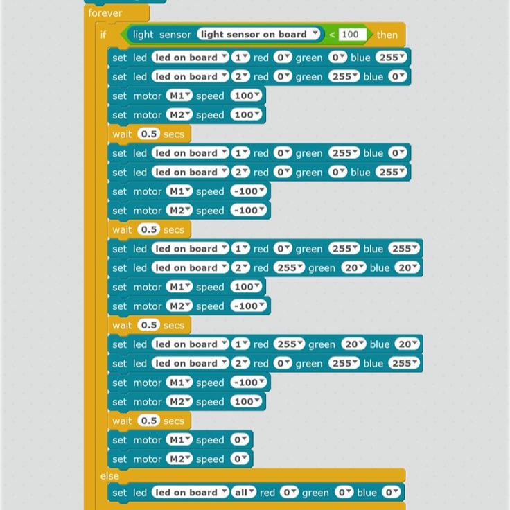
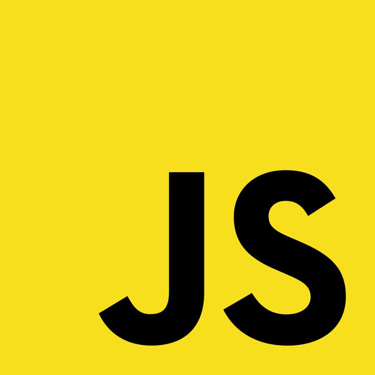
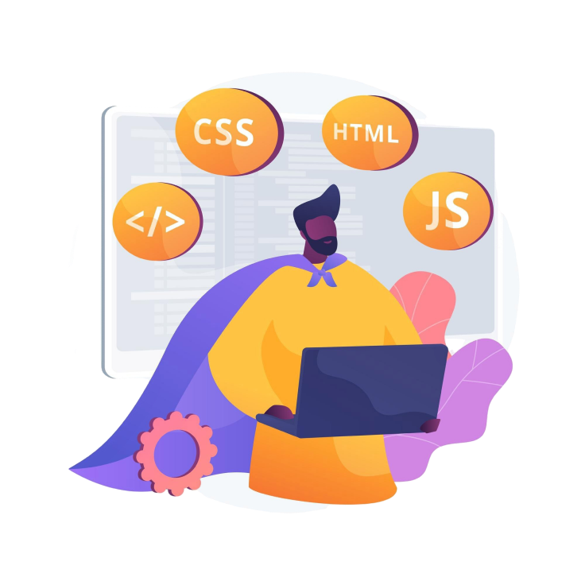

É um curso oferecido pela UniFil para os alunos do ensino médio que abrange as escolas públicas e privadas. Onde eles aprendem sobre o mundo da programação. Tem como objetivo Oferecer suporte à comunidade de Londrina e região, na área de desenvolvimento do pensamento lógico dos estudantes. O Curso pensamento Computacional da UNIFIL é uma oportunidade única para alunos do ensino médio das escolas públicas de Londrina. Totalmente gratuito, o curso oferece um aprendizado prático e teórico em HTML, CSS, programação em bloco e JavaScript, preparando os estudantes para o mundo digital.
Quando aplicamos o pensamento computacional, aprendemos a tomar decisões mais informadas por meio das
análises lógicas, contribuindo para decisões mais
assertivas. O desenvolvimento de algoritmos eficientes possibilita a automação de tarefas, melhorando a
eficiência e permitindo que as pessoas se concentrem
em atividades mais complexas e estratégicas. Essas habilidades capacitam as pessoas a se adaptarem
rapidamente a novas tecnologias e ferramentas digitais,
promovendo a agilidade e a capacidade de aprendizado contínuo.
Em muitos setores, as habilidades relacionadas ao pensamento computacional são altamente valorizadas. A
capacidade de resolver problemas, pensar de maneira
lógica e entender algoritmos é essencial em muitos ambientes de trabalho. O pensamento computacional
estimula a criatividade e a inovação. Ao abordar problemas
de maneira sistemática, as pessoas podem descobrir soluções inovadoras e criar novos produtos, serviços
ou abordagens. Também contribui para o desenvolvimento
de habilidades cognitivas, como raciocínio lógico, análise crítica, resolução de problemas e abstração.
Essas habilidades têm aplicações amplas em diversas áreas.
Veja o que os instrutores disseram sobre o projeto!
"O projeto do pensamento computacional me mudou nos longos desses 3 anos, me permitiu ganhar experiencias que nunca teria pensado em adquirir, é ótimo saber que você está realizando algo que você gosta. A interação com os alunos e entendimento aprofundado me ajudou muito em minha caminhada e em minha opinião os monitores que passaram pelo pensamento computacional amadureceram, entendendo processos e como ajudar outras pessoas, isso é ótimo para a sociedade e imagino que esse projeto realmente consiga impactar o ecossistema de Londrina."
"Fui professora no Pensamento Computacional e, durante minha experiência, tive a
oportunidade de contribuir para a formação de jovens do ensino médio no
aprendizado de lógica de programação e programação básica. O curso, gratuito e acessível,
foi uma oportunidade única de levar conhecimento a estudantes
que, de outra forma, poderiam não ter acesso tão facilitado a essas ferramentas. Isso também
contribui para colocar os alunos em contato com a área de
tecnologia, onde eles podem descobrir afinidade e seguir carreira.
O impacto desse projeto foi transformador, tanto para os alunos quanto para mim. Ver o
progresso e a curiosidade dos estudantes ao longo do curso foi
extremamente gratificante e reforçou a importância de iniciativas que democratizam o ensino
de tecnologia. Foi muito enriquecedor participar desse
processo de construção de habilidades, não só técnicas, mas também de pensamento crítico e
resolução de problemas.
Essa experiência também foi essencial para o meu próprio desenvolvimento, tanto no campo
educacional quanto na compreensão do poder que a tecnologia tem
para abrir novas perspectivas. Acredito que projetos como esse desempenham um papel
fundamental ao proporcionar oportunidades de aprendizado e
crescimento, preparando jovens para enfrentar os desafios do futuro."
"Minha experiência como professor nesse projeto foi extremamente gratificante. Enquanto ensinava conceitos e tecnologias atuais do mercado, também pude aprofundar meu conhecimento em tópicos importantes, com foco sempre nos fundamentos. Essa busca por entender melhor esses fundamentos me motivou a procurar novas ideias e inovações para compartilhar com meus alunos. O aprendizado foi uma via de mão dupla: cada interação e questionamento em sala de aula me ajudou a crescer profissional e pessoalmente. Essa troca de experiências tornou tudo ainda mais enriquecedor."
"Fui monitora em 2022 e instrutora em 2023 e 2024, foi uma experiência muito boa, onde consegui ensinar lógica de programação e como pensar computacionalmente. Consegui ver a evolução dos alunos no decorrer do curso e é muito gratificante saber que contribui através do ensino e uso de tecnologias na vida deles."
"O projeto do pensamento computacional me mudou nos longos desses 3 anos, me permitiu ganhar experiencias que nunca teria pensado em adquirir, é ótimo saber que você está realizando algo que você gosta. A interação com os alunos e entendimento aprofundado me ajudou muito em minha caminhada e em minha opinião os monitores que passaram pelo pensamento computacional amadureceram, entendendo processos e como ajudar outras pessoas, isso é ótimo para a sociedade e imagino que esse projeto realmente consiga impactar o ecossistema de Londrina."
"Fui professora no Pensamento Computacional e, durante minha experiência, tive a
oportunidade de contribuir para a formação de jovens do ensino médio no
aprendizado de lógica de programação e programação básica. O curso, gratuito e acessível,
foi uma oportunidade única de levar conhecimento a estudantes
que, de outra forma, poderiam não ter acesso tão facilitado a essas ferramentas. Isso também
contribui para colocar os alunos em contato com a área de
tecnologia, onde eles podem descobrir afinidade e seguir carreira.
O impacto desse projeto foi transformador, tanto para os alunos quanto para mim. Ver o
progresso e a curiosidade dos estudantes ao longo do curso foi
extremamente gratificante e reforçou a importância de iniciativas que democratizam o ensino
de tecnologia. Foi muito enriquecedor participar desse
processo de construção de habilidades, não só técnicas, mas também de pensamento crítico e
resolução de problemas.
Essa experiência também foi essencial para o meu próprio desenvolvimento, tanto no campo
educacional quanto na compreensão do poder que a tecnologia tem
para abrir novas perspectivas. Acredito que projetos como esse desempenham um papel
fundamental ao proporcionar oportunidades de aprendizado e
crescimento, preparando jovens para enfrentar os desafios do futuro."
"Minha experiência como professor nesse projeto foi extremamente gratificante. Enquanto ensinava conceitos e tecnologias atuais do mercado, também pude aprofundar meu conhecimento em tópicos importantes, com foco sempre nos fundamentos. Essa busca por entender melhor esses fundamentos me motivou a procurar novas ideias e inovações para compartilhar com meus alunos. O aprendizado foi uma via de mão dupla: cada interação e questionamento em sala de aula me ajudou a crescer profissional e pessoalmente. Essa troca de experiências tornou tudo ainda mais enriquecedor."
"Fui monitora em 2022 e instrutora em 2023 e 2024, foi uma experiência muito boa, onde consegui ensinar lógica de programação e como pensar computacionalmente. Consegui ver a evolução dos alunos no decorrer do curso e é muito gratificante saber que contribui através do ensino e uso de tecnologias na vida deles."
Se destacou pela curiosidade, empatia e entrega no projeto!
Os monitores desempenham um papel fundamental na sala de aula. Eles estão presentes em todas as aulas para garantir que os alunos tenham o suporte necessário durante o aprendizado. Seu principal objetivo é tirar dúvidas, auxiliar no entendimento dos conteúdos e facilitar a aplicação prática dos conceitos.
Além disso, os monitores estão disponíveis para dar orientação individualizada, ajudando os alunos a superarem desafios específicos, seja durante a escrita de código, na organização dos projetos ou na resolução de problemas.
Os monitores também desempenham um papel importante em motivar os alunos, incentivando-os a persistirem mesmo diante de dificuldades, e celebrando suas conquistas ao longo do curso.
| Dia da Semana | Horário de Início | Horário de Término |
|---|---|---|
| Terça-Feira | 14:00 | 15:45 |
| Terça-Feira | 16:00 | 17:45 |
| Quarta-Feira | 14:00 | 15:45 |
| Quarta-Feira | 16:00 | 17:45 |
| Quinta-Feira | 15:00 | 17:45 |
Existem diferentes níveis de turma de acordo com o conhecimento dos alunos:
Os horários podem variar
Programação em Bloco
HTML e CSS

JavaScript
Programação de um jogo web com HTML CSS e Javascript
Reviva os melhores momentos de cada ano
Visite o site oficial da UniFil para mais informações sobre o curso de Pensamento Computacional e outras oportunidades educacionais.
Acessar site da UniFil